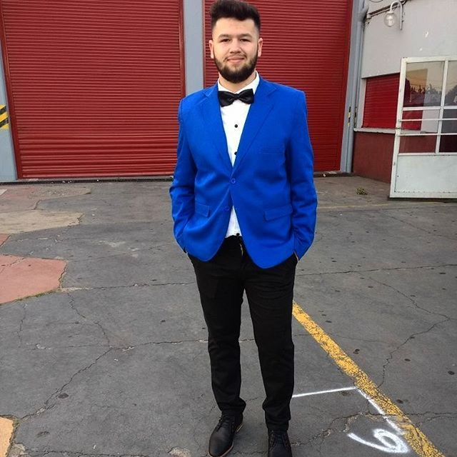
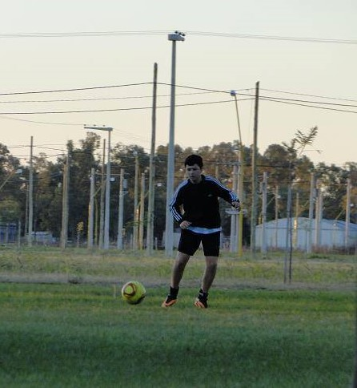

.jpg)


Hola! Soy Juan Denipoti, pero me suelen decir Juani o “Deni” por mis 4 primeras letras de mi apellido. Soy de San Francisco, una ciudad en la provincia de Córdoba, Argentina. Terminé mi secundario en el año 2017, y comencé a estudiar Comunicación Social, pero en el transcurso del 2019 descubrí que mi verdadera vocación es programar. Prosegui con cursar la Tecnicatura en Programacion en UTN. Actualmente formo parte de la capacitacion que brinda el programa "CLIP". En esta web, he desarrollado mi primer portafolio, para actualizarlo en un futuro, conforme a la especialidad elegida y proyectos personales. Espero que disfruten la página
Mis hobbies y preferencias son bastantes amplias, me considero una persona abierta a nuevas actividades, tanto así que he practicado casi todos los deportes, ya sea, básquet, futbol, tenis, pádel, vóley, natación. Además, me interesa cualquier tipo de música, debido que la considero esencial para nuestra vida. Por otra parte, me gusta mucho viajar, aunque no he tenido la posibilidad de conocer tantos países. Tengo muchísimo interés en conocer gran parte de lugares históricos de Europa y soy un apasionado de perfeccionar mis ingles. En estos momentos de pandemia y cuarentena, descubrí también que me divierte jugar videojuegos con amigos de manera online (a través del uso de llamadas de voz), ya sea, FIFA, Counter Strike, Among Us etc. A pesar de que no lo mencioné, me fascina programar, y aprender cosas nuevas todos los días, por más pequeño y sencillo que sea.